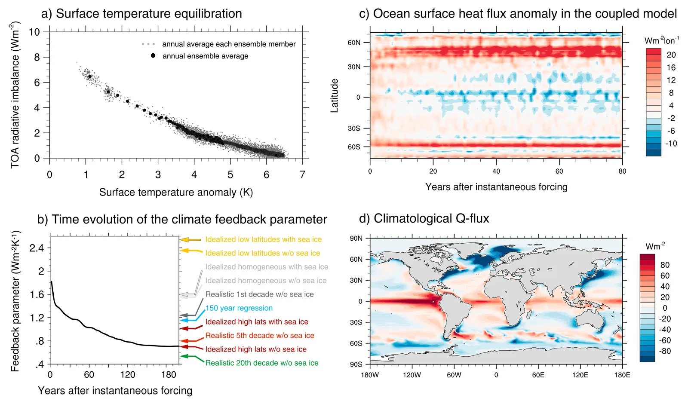

Dependence of global radiative feedbacks on evolving patterns of surface heat fluxes
Key finding. As the pattern of ocean heat uptake evolves from a more homogeneous toward a heterogeneous, high-latitude-enhanced pattern, it changes not only regional but global radiative feedbacks, with cloud radiative effects playing an important role in decreasing the magnitude of the climate feedback parameter.

What question did this research address?
In most climate models, the magnitude of the climate feedback parameter decreases in the centuries after an abrupt increase in forcing. Because that parameter governs how much warming a given forcing eventually produces, a drift in it means the climate sensitivity inferred from a short record understates the long-run response.
This paper asked what causes the drift, and specifically whether the changing geographic pattern of ocean heat uptake — not just its magnitude — is responsible.
What did we find?
A slab ocean model was forced with scaled patterns of ocean heat uptake taken from a coupled ocean-atmosphere general circulation model, isolating the effect of the pattern from everything else that changes over time.
Steady-state results from the slab ocean configuration approximate the transient results from the full dynamic ocean, confirming that the evolving uptake pattern is sufficient to explain the behaviour.
Cloud radiative effects are a major contributor to the weakening of the feedback parameter, rather than the effect arising primarily from clear-sky radiation.
The ocean therefore influences surface temperature twice over — once by taking up heat, and again by changing the atmospheric feedbacks that determine how much warming a given forcing produces.
Why does it matter?
The result is a caution about inference. Estimates of climate sensitivity drawn from short simulations, or from observed variability over recent decades, sample a feedback regime that will not persist, and so will tend to understate the eventual warming.
It also identifies where the leverage lies. Because the effect works through the spatial pattern of heat uptake, getting the geography of ocean circulation right matters for global, not merely regional, projections.
Citation, data, and code
Maria A. A. Rugenstein, Ken Caldeira, and Reto Knutti (2016). Dependence of global radiative feedbacks on evolving patterns of surface heat fluxes. Geophysical Research Letters 43, 9877-9885.